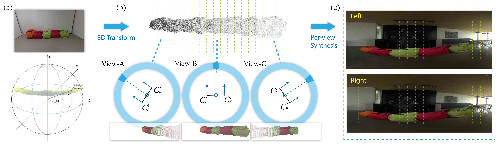

VR Visual
Infrastructure
Stereo Image Composition & Pipeline ROI Optimization
The Single-Shot Advantage & Challenge
Panoramic or 360° images capture an entire scene from a single camera at a single moment. However, manipulating stereo panoramic content, such as inserting objects, is notoriously difficult. Traditional "one-off" operations produce broken depth perception and ghost artifacts when viewed from different directions.
TVCG Innovation: Per-View Synthesis
Per-view Synthesis: (a) Spherical Coordinates (b) Per-view Projection (c) Stereo pair generation guided by densified depth maps
Published in IEEE TVCG, our research represents the first general pipeline designed specifically for compositing objects into stereo 360° image pairs. As a fundamental work in VR visual processing, our solution segments objects in 3D spherical space by simulating the stereo camera pair facing each view direction. A deep depth densification network then generates precise depth guidance, ensuring virtual objects feel grounded and artifact-free, establishing a potential paradigm for future content manipulation in omnidirectional media.
Commercial Case: oVRcome Platforms
MLOps Pipeline Optimization
- • Introduced quantitative VR quality evaluation using VMAF and perceptual metrics to replace subjective assessment.
- • Designed a scalable, end-to-end evaluation pipeline that automates re-encoding logic for 3,850+ minutes of video.
- • Transitioned from visual guesswork to objective measurement of VR video clarity.
ROI & User Experience Optimization
- • Through established quantitative data pipelines, identified the "sweet point" between encoding rate and resolution to maximize immersion.
- • Optimized bitrate profiles across scene types, improving clarity and stability for fast-motion scenarios.
- • Directly supported successful funding applications through evidence-based quality reporting.
Academic Foundation
360° Stereo Image Composition with Depth Adaption
2024 IEEE Transactions on Visualization and Computer Graphics | Tier A*
Commercial ROI
Lowered encoding and conversion costs through data-driven pipeline optimization.
Academic Excellence
Establishing a first-of-its-kind paradigm for stereo 360° content manipulation.
Technical Highlights
3D Architecture
Per-View Projection & Depth Adaptation
AI Data Science
Built Automated Evaluation Workflow (VMAF & ETL)
Commercial ROI
50% Cost Reduction via Metric-Driven Encoding
Scale
3,850+ mins VR Pipeline Automation